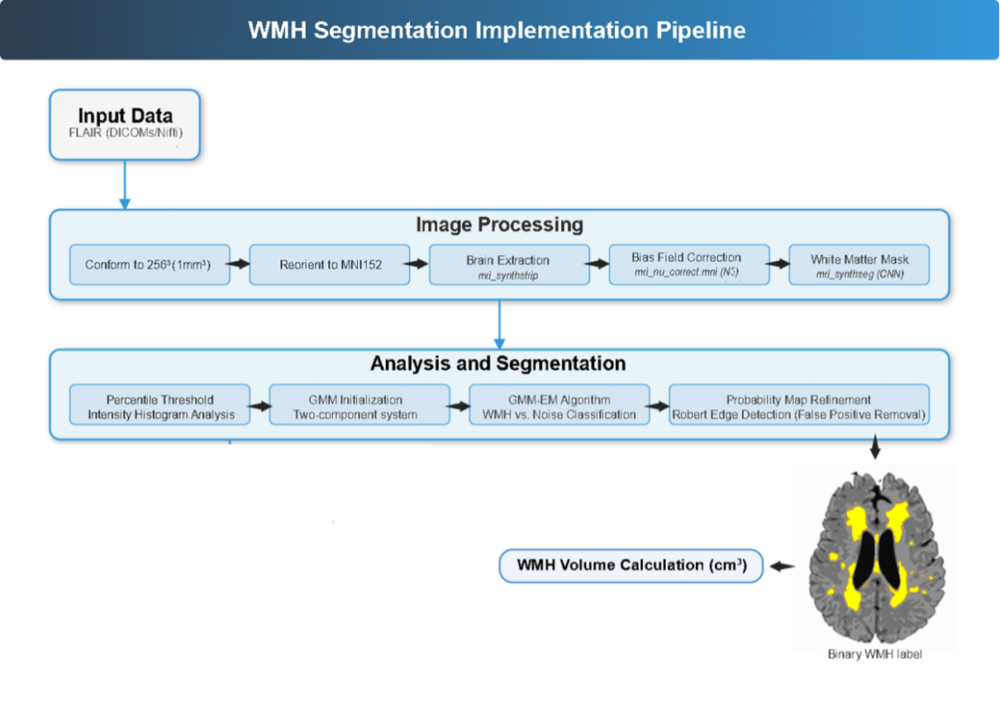

6 MRI
Magnetic Resonance Imaging
Authors Mohamad J Alshikho1, 2, Bradley T Christian3, and Adam M Brickman1, 2
- Taub Institute for Research on Alzheimer’s Disease and the Aging Brain, College of Physicians and Surgeons, Columbia University. 630 West 168 Street, New York, NY 10032.
- Department of Neurology, Vagelos College of Physicians and Surgeons Columbia University New York NY USA.
- Waisman Center, University of Wisconsin-Madison, Madison, Wisconsin, USA.
6.1 Structural T1 MRI Processing in ABC-DS Using FreeSurfer Cross-Sectional and Longitudinal
6.1.1 Summary
ABC-DS T1-weighted MRI scans were processed using the fully automated FreeSurfer v7.4.1 cross-sectional and longitudinal pipelines to derive cortical thickness and volumetric measurements. Input data consisted of DICOM images from the ABC-DS dataset, organized and converted in a standardized workflow and subjected to consistent quality control within a shared HPC environment.
6.1.2 Data Acquisition & Organization
DICOM Sorting: raw DICOM files were obtained from LONI. A centralized custom module in the Brickman Lab screened and parsed DICOM headers to extract:
- Patient name and/or patient ID
- Series Description
- Scan Date (as reported in the DICOM header; note that LONI applies date shifting as part of de-identification).
Based on these header fields, data were organized into subject_scandate directory structures and corresponding session-level folders to maintain consistency across all scans.
DICOM → NIfTI Conversion
- T1-weighted DICOM files were converted to NIfTI format using FreeSurfer’s mri_convert tool.
- Dcm2niix/1.0.20240202 was used as a fallback converter.
- The resulting T1 NIfTI files served as the standardized inputs for all quality-control procedures and FreeSurfer processing.
6.1.3 Quality Assessment of Raw T1 Images
- Visual QC: a single trained reviewer visually inspected every T1-weighted scan for:
- Motion artifacts
- Noise-related issues
- Anatomical abnormalities
- Pathology indicators
- Automated QC Metrics (MRIQC). MRIQC (https://github.com/nipreps/mriqc) was used to extract quantitative image-quality metrics, including motion-related measures that were used to compare motion levels between study groups.
6.1.4 FreeSurfer Processing
- Version & References
- FreeSurfer v7.4.1 https://surfer.nmr.mgh.harvard.edu/fswiki/rel6downloads
- Standard methods described on the FreeSurfer wiki and related literature.
- Pipeline Execution: all scans were first processed using the cross-sectional recon-all pipeline (https://surfer.nmr.mgh.harvard.edu/fswiki/recon-all), which includes:
- Motion correction
- Intensity normalization
- Skull stripping
- White-matter and pial surface reconstruction
- Subcortical segmentation
- Cortical parcellation (e.g., Desikan–Killiany atlas)
- Participants with multiple timepoints were additionally processed using the FreeSurfer longitudinal stream, following the procedures described in: https://surfer.nmr.mgh.harvard.edu/fswiki/FsTutorial/LongitudinalTutorial
6.1.5 Quality Assessment of FreeSurfer Outputs
Surface Inspection: reconstructed cortical surfaces (white and pial) were visually checked to report:
- Topological inaccuracies
- Misclassified tissue boundaries
- Over- or under-estimated surfaces
Automated FreeSurfer QA Tools (https://github.com/Deep-MI/fsqc)
Statistical Outlier Detection: all regional cortical thickness and volumetric measures were evaluated using z-score bands: −4, −3, −2, −1, 0, +1, +2, +3, +4. Outliers were flagged and re-examined as needed.
Notes
- All scans were processed within the same HPC environment.
- All QC procedures were performed by the same individual for consistency.
6.2 White Matter Hyperintensity Segmentation from Fluid-Attenuated Inversion Recovery MRI
6.2.1 Summary
White matter hyperintensities (WMH) were segmented from FLAIR MRI using the ASWMH (Automated Segmentation of White Matter Hyperintensities) in-house tool (US patent: US9867566B2). ASWMH was developed and validated in the Brickman Lab and supports high-throughput processing, including parallel execution on HPC environments. This pipeline generates WMH probability maps, refined binary lesion masks, and total WMH volume (cm³) after comprehensive preprocessing, intensity normalization, adaptive thresholding, and shape-based refinement.
6.2.2 Data Acquisition & Organization
- DICOM Sorting: raw FLAIR DICOMs were downloaded from LONI and processed using the same centralized module used for T1/DTI datasets. DICOM headers were parsed to extract:
- Patient name and/or patient ID
- Series Description
- Scan Date (as reported in the DICOM header; note that LONI applies date shifting as part of de-identification).
- Data were organized into subject_scandate and session-level folders to maintain consistent structure across scans.
- DICOM → NIfTI Conversion
- FLAIR DICOMs were converted to NIfTI format using FreeSurfer mri_convert.
- Converted NIfTI files served as inputs for QC and ASWMH processing.
6.2.3 Quality Assessment of Raw FLAIR Images
- Visual QC: each FLAIR image underwent manual visual QC to assess:
- Motion artifacts
- Ghosting or streaking
- Signal loss or dropout
- Fat-saturation or inversion issues
- Field inhomogeneity
- Severe white-matter pathology or atypical patterns
- Image Property Verification: before segmentation, image properties were verified and recorded:
- Voxel dimensions
- Image orientation
- Slice thickness
- Field-of-view
- Matrix size
ASWMH standardizes all inputs to 256 × 256 × 256 with 1 mm³ isotropic voxels to eliminate dimensional variability in downstream segmentation.
6.2.4 Processing Pipeline
Preprocessing and Standardization: ASWMH accepts DICOM or NIfTI inputs and performs:
- Resampling and conforming to a 256×256×256 matrix
- Voxel size standardization to 1 mm³ isotropic
- Reorientation to MNI152 template space
- Brain extraction using FreeSurfer’s mri_synthstrip This ensures anatomical consistency across images from different scanners and protocols.
Bias Field Correction and Intensity Normalization:
- Bias field correction is applied using MNI’s N3 algorithm (mri_nu_correct.mni http://www.bic.mni.mcgill.ca/software/N3), chosen because of:
- More stable performance across multi-scanner datasets
- Better intensity uniformity compared to N4 in empirical tests
- After N3 correction, histogram-based mapping rescales intensities to the 0–255 grayscale range.
- Bias field correction is applied using MNI’s N3 algorithm (mri_nu_correct.mni http://www.bic.mni.mcgill.ca/software/N3), chosen because of:
White Matter Mask Generation: White-matter masks are derived from FreeSurfer7.4.10 mri_synthseg segmentations:
- Label 2 = Left cerebral white matter
- Label 41 = Right cerebral white matter These masks are refined with morphological hole-filling and used to constrain all segmentation steps to white matter only.
Adaptive Thresholding and GMM Initialization
A custom ASWMH2.5.6 module computes data-driven percentile thresholds from each scan’s FLAIR intensity histogram. This module analyzes the upper tail of the FLAIR brightness distribution, identifies subject-specific hyperintensity ranges and avoids single fixed cutoffs.
These thresholds initialize a two-component Gaussian Mixture Model (GMM) within the white-matter mask. The two GMM components correspond to WMH-like high-intensity voxels and background / non-WMH white matter voxels. Posterior probabilities for each voxel are computed, forming the initial WMH probability map.
Shape-Based Refinement
To reduce false positives, ASWMH incorporates shape features (brightness ratio, elongation and sphericity). These features suppress vessels, noise spikes, and partial-volume artifacts.
Edge-Based Refinement
The Roberts edge detector (scikit-image https://scikit-image.org/docs/0.25.x/auto_examples/edges/plot_edge_filter.html) is applied in the axial plane to refine lesion boundaries. This step reduces spillover into cortex or CSF, sharpens lesion borders and eliminates peripheral distortions not removed by the WM mask alone. The result is a refined WMH probability map.
Registration to MNI Space
Following segmentation refinement, the standardized FLAIR image and corresponding WMH mask were registered to the MNI152 template using FSL/6.0.7.16 registration tools.
Final WMH Volume Computation
Final WMH volume (cm³) was computed by summing all voxels labeled as WMH and multiplying by the voxel volume (1 mm³). Regional and lobar WMH volumes (frontal, temporal, parietal, occipital) were extracted using FreeSurfer7.4.1’s mri_segstats, applied to the MNI-registered WMH mask and corresponding lobar anatomical labels.
6.2.5 Output QC
WMH output quality control was performed through visual inspection of the final segmentation overlays. ASWMH additionally generated HTML quality-assessment reports that display labeled and unlabeled FLAIR slices side-by-side, providing comprehensive snapshots of segmentation performance. Flagged cases underwent re-inspection and manual review.
6.2.6 Notes
- All scans were processed within the same HPC environment used for the T1 analysis.
- All processing steps described above are summarized in the schematic workflow shown in the illustration below.

6.3 Diffusion Tensor Imaging Processing Using FreeSurfer’s dt_recon
6.3.1 Summary
ABC-DS diffusion-weighted MRI scans were processed using the FreeSurfer dt_recon pipeline (https://surfer.nmr.mgh.harvard.edu/fswiki/dt_recon) to generate diffusion tensor maps, including fractional anisotropy (FA). Input data consisted of DICOM images from the ABC-DS dataset, organized through a standardized workflow and subjected to consistent raw-image and output QC within the shared HPC environment.
6.3.2 Data Acquisition & Organization
- DICOM Sorting: raw DICOM files were obtained from LONI. A centralized custom module in the Brickman Lab screened and parsed DICOM headers to extract:
- Patient name and/or patient ID
- Series Description
- Scan Date (as reported in the DICOM header; note that LONI applies date shifting as part of de-identification
- Data were organized into subject_scandate directory structures and corresponding session-level folders to maintain consistency across all scans.
- DICOM → NIfTI Conversion
- DTI/DWI DICOM files were converted to NIfTI using FreeSurfer’s mri_convert.
- Dcm2niix/1.0.20240202 was used as a fallback converter.
- NIfTI files served as the standardized inputs for all QC procedures and the FreeSurfer diffusion pipeline.
6.3.3 Quality Assessment of Raw DTI Images
- Visual QC: a single trained reviewer visually inspected every DTI scan for:
- Motion
- Slice dropout
- Distortions
- Signal loss
- General acquisition artifacts
- Motion, Eddy, and Susceptibility QC: processing followed a fixed sequence:
- Denoising using Patch2Self https://pubmed.ncbi.nlm.nih.gov/36543265/ applied to all scans as the first step after visual QC.
- Susceptibility Distortion Correction (if AP/PA DTI are available): For datasets containing opposing phase-encode (AP/PA) pairs, TOPUP (https://fsl.fmrib.ox.ac.uk/fsl/docs/diffusion/topup/index.html) was applied to correct susceptibility-induced distortions.
- Motion + Eddy Current Correction Completed through FreeSurfer’s dt_recon pipeline, which internally runs FSL’s eddy correction routines. No external standalone eddy processing was executed.
6.3.4 FreeSurfer DTI Processing Pipeline
- Version & References
- FreeSurfer7.4.1 dt_recon https://surfer.nmr.mgh.harvard.edu/fswiki/dt_recon
- The method aligns diffusion data to the subject’s T1 FreeSurfer reconstruction directory, enabling surface-based and volumetric analyses.
- Pipeline Execution: dt_recon performs:
- Motion and Eddy Correction (FSL-based)
- Tensor fitting.
- Registration of diffusion data to structural FreeSurfer space
- Generation of standard diffusion maps, including:
- Fractional Anisotropy (FA)
- apparent diffusion coefficient (ADC)
- Radial Diffusivity (RD)
- dt_recon outputs DTI maps suitable for:
- Voxelwise analysis
- ROI-based analysis
- Surface-based diffusion analyses
- Region of interest ROI analsysis
- All FA maps were registered to standard space using FMRIB58 template.
- FreeSurfer mri_segstats was used to extract:
- Regional and lobar FA metrics
- FA in major white-matter tracts was extracted using the JHU White Matter Atlas.
6.3.5 Quality Assessment of DTI Outputs
FA and other diffusion metrics were screened using z-score bands: −4, −3, −2, −1, 0, +1, +2, +3, +4. Any regional outliers were flagged for review and re-evaluation.
6.3.6 Notes
- All scans were processed within the same HPC environment used for the T1 analysis.
- We did not report diffusivity (MD, AD, RD, ADC) measures because not all subjects had opposing phase-encode directions in the DTI acquisition. Upon visual inspection, cortical diffusivity appeared unreliable due to susceptibility artifacts. Therefore, we report only FA, as it is a more reliable measure in this dataset.
- Due to errors reported in the orientation of the ICBM-DTI-81 atlas and its white-matter labels, the authors used the JHU white-matter tract atlas from FSL tools box instead.
- All QC procedures (raw image QC and output QC) were performed by the same individual for methodological consistency.
References[15]
6.4 ASL Imaging Processing for Cerebral Blood Flow Quantification
6.4.1 Summary
Cerebral Blood Flow (CBF) represents the volume of blood delivered to brain tissue per unit time, expressed in ml/100g/min. ASL-derived CBF is a sensitive physiological marker relevant to Alzheimer’s disease research in Down syndrome. Prior studies show that individuals with Down syndrome who develop Alzheimer’s disease exhibit significantly reduced CBF, with stronger declines in individuals with greater cognitive impairment and a nonlinear age effect indicating faster reductions after ~45 years of age. In the ABC-DS cohort, both 3D pulsed ASL (pASL) and 3D pseudo-continuous ASL (pCASL) were used to quantify CBF across participants.
6.4.2 MRI Data Acquisition & Organization
- DICOM Sorting: raw DICOM files were obtained from LONI. A centralized custom module in the Brickman Lab screened and parsed DICOM headers to extract:
- Patient name and/or patient ID
- Series Description
- Scan Date (as reported in the DICOM header; note that LONI applies date shifting as part of de-identification). Data were organized into subject_scandate directory structures and corresponding session-level folders to maintain consistency across all scans.
- DICOM → NIfTI Conversion
- ASL DICOM files were converted to NIfTI using dcm2niix/1.0.20240202.
- NIfTI files served as the standardized inputs for all QC procedures.
- ASL Acquisition Protocols (ABCDS Study): ASL data in the ABC-DS cohort were acquired using two distinct protocols:
- pASL Acquisition (Siemens Prisma)
- TE = 16.02 ms
- TR = 5000 ms
- Flip angle = 180°
- Slice thickness = 4 mm
- Acquisition matrix = 448 × 448
- Data acquired in control–label pairs
- pCASL Acquisition (GE MR750)
- TE = 10.528 ms
- TR = 4888 ms
- Inversion time (TI) = 2025 ms
- Flip angle = 111°
- Slice thickness = 4 mm
- Acquisition matrix = 128 × 128
- Includes M0 image (proton density) and PWI (perfusion-weighted image)
- pASL Acquisition (Siemens Prisma)
6.4.3 Quality Assessment
- Visual QC: all ASL volumes were visually inspected for:
- Motion artifacts
- Label–control misalignment
- Severe field inhomogeneity
- Motion QC & Quantitative thresholds: For pASL data:
- Motion correction: FSL/6.0.7.16’s tool mcflirt
- Outlier detection: FSL/6.0.7.16’s tool fsl_motion_outliers
- Quantitative exclusion thresholds (based on published literature) included SNR (GM/WM) ≤ –2.3 or ≥ 3.4 and mean framewise displacement > 0.319. Volumes failing these criteria were excluded.
- All data is processed regardless of QC status. The subject was labeled as OK in the quality assessment report when visual inspection and quality metrics were acceptable, or labeled as POOR (recommend exclusion) when severe distortions were present that could affect the accuracy of quantitative CBF.
6.4.4 ASL Data Processing
- Both pASL and pCASL datasets were processed using FSL/6.0.7.16’s oxford_asl, following the standardized quantification framework recommended in Alsop et al. (2015). Processing steps included:
- Control–label matching (for pASL) using zig-zag pattern detection
- If the M0 image was missing, an estimated M0 was computed from the average of the control images.
- Registration to Structural T1: both pASL and pCASL CBF maps were registered to the participant’s T1-weighted anatomical scan using FreeSurfer bbregister (boundary-based registration) and masked using FreeSurfer brain masks to remove non-brain voxels.
- Regional and Lobar CBF Extraction: using FreeSurfer anatomical parcellations:
- Desikan–Killiany atlas was applied to compute regional mean CBF values.
- Lobar summaries (frontal, temporal, parietal, occipital) were derived using the corresponding atlas definitions.
6.4.5 Notes
- Both pASL and pCASL adhere to the ASL white paper Alsop et al. (2015) / ISMRM consensus guidelines.
- Quantification uses consistent physiological parameters across participants.
- All QC and processing were performed in a unified HPC environment, using the same tools across the dataset.
6.5 Small Vessel Disease Markers: Enlarged Perivascular Spaces, Infarcts, and Microbleeds
6.5.1 Enlarged Perivascular Spaces and Infarcts
Overview. We developed a lesion-classification algorithm based on anatomical location, T1 and T2 FLAIR signal characteristics, and lesion size to distinguish between enlarged perivascular spaces (PVS) and cavitated infarcts. PVS represent pathways for metabolic waste clearance that depend on vascular pulsatility. In adults with Down syndrome, enlarged PVS are consistently elevated across progressive Alzheimer’s disease (AD) diagnostic groups and emerge in the early 30s, predating amyloid and tau PET abnormalities. Cavitated infarcts may arise from embolic events, small-artery occlusions, or large-vessel disease. In adults with Down syndrome, infarcts also appear at young ages and increase with advancing AD stage.
Imaging Characteristics and Rating Procedure. PVS were first identified on T1-weighted MRI as sharply demarcated hypointense tubular or ovoid structures following the course of penetrating vessels. These findings were then cross-checked on T2 FLAIR: true PVS lack the hyperintense rim typical of infarcts. A visible hyperintense T2 FLAIR ring around a T1 hypointensity served as the primary criterion for labeling a lesion as a cavitated infarct. In regions where PVS are uncommon (e.g., brainstem, upper basal ganglia), the requirement for a FLAIR rim was relaxed. All images were reviewed in DICOM format using the RadiAnt viewer to ensure consistency in visualization.
Scoring and Quantification. Enlarged PVS were scored across 13 predefined brain regions, each rated from 0 to 2 based on severity. Regional scores were summed to generate a global PVS score ranging from 0 (none) to 26 (maximum severity). Infarcts were rated on T2 FLAIR as discrete hypointense cavities > 5 mm with partial or complete hyperintense rims and confirmed on T1 as hypointense lesions. Due to a highly skewed distribution, infarcts were categorized simply as present or absent.
Acquisition Summary. T1-weighted scans were primarily acquired on a Siemens Prisma scanner with TR values between 6.8–2300 ms, TE values of 2.95–3.55 ms, inversion times (TI) of 400 or 900 ms, flip angles of 7°–11°, and slice thicknesses of 1.0–1.2 mm. FLAIR scans were acquired on the same platform with TR values of 4800 or 5000 ms, TE values of 110.8–441 ms, TI values between 1372–1800 ms, flip angles of 90° or 120°, and slice thicknesses of 0.9–1.2 mm.
6.5.2 Cerebral Microbleeds
Overview. Cerebral microbleeds (CMBs) are small foci of chronic blood product deposition and are closely associated with cerebral amyloid angiopathy (CAA) and Alzheimer’s disease pathology. In Down syndrome, CMBs increase in frequency across progressive AD diagnostic stages and typically appear in the mid-30s, coinciding with early parenchymal amyloid and tau abnormalities.
Imaging Acquisition. T2*-weighted sequences—including Gradient-Recalled Echo (GRE), Susceptibility-Weighted Imaging (SWI), and T2-star sequences—were used for microbleed detection. Most scans were acquired on a Siemens Prisma scanner with TR = 27–28 ms, TE = 6.7–20 ms, flip angle = 20°, and slice thickness = 1.5–4.0 mm.
Quality Assessment. An annual quality review was conducted to evaluate motion-related blurring, slice coverage, and overall image integrity. Raw DICOM data were converted to NIfTI format using Freesurfers’s mri_convert. Scans were excluded if:
- Motion artifacts substantially impaired visualization.
- Fewer than 50 axial slices were available (to ensure adequate brain coverage).
Visual QC assessed sharpness, susceptibility artifacts, and contrast sufficient for detecting paramagnetic signal voids.
Microbleed Identification. CMBs were identified using Greenberg criteria, , as summarized in the table below, which define microbleeds as:
- Small, round or ovoid hypointense signal voids on T2*-weighted images
- Surrounded by brain parenchyma (not contiguous with vessels or bone)
- Demonstrating a blooming effect consistent with hemosiderin deposition
- Lacking hyperintense components on T2* (helping to distinguish them from cavernomas and other mimics)
- Paramagnetic substances such as calcifications or iron deposits were considered as possible mimics and excluded based on characteristic appearance.
| Recommended Criteria for CMB Identification |
|---|
|
|
|
|
|
|
|
- Scoring and Quantification. Because the distribution of CMBs was highly skewed, most participants having either none or a single lesion, microbleeds were recorded as present or absent at the whole-brain level. Regional assessments were performed across the frontal, temporal, parietal, and occipital lobes, as well as the basal ganglia, brainstem, and cerebellum. Total CMB counts were then documented for each participant.
Computing Environment
- System
- OS: Debian GNU/Linux 12 (bookworm)
- Kernel: Linux 6.1.0-28-amd64
- Architecture: x86-64
- Hostname: brickmanlogin
- Hardware
- Server: Supermicro SYS-1028R-WTNRT
- Firmware: v3.1c
- Platform: Columbia University / Brickman Lab/ HPC
- Build Information
- Build Date: Nov 22, 2024
- Debian build: 6.1.119-1
Authors. This document was prepared by Dr. Alshikho and Dr. Brickman from Columbia University, together with Dr. Christian from the Waisman Center at the University of Wisconsin. For more information, please contact Dr. Brickman at amb2139@cumc.columbia.edu or Dr. Christian at bchristian@wisc.edu.